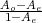

|
|
Annotation of Multiword Expressions in the Prague Dependency Treebank
Eduard Bejček (bejcek@ufal.mff.cuni.cz) and Pavel Straňák (stranak@ufal.mff.cuni.cz)
Institute of Formal and Applied Linguistics, Charles University, Prague, Czech Republic
Abstract. In this article we want to demonstrate that annotation of multiword expressions in the Prague Dependency Treebank is a well defined task, that it is useful as well as feasible, and that we can achieve good consistency of such annotations in terms of inter-annotator agreement. We use subtrees of the tectogrammatical tree structures of the Prague dependency treebank to represent the multiword expressions and pre-annotate them automatically. We show a way to measure agreement for this type of annotation. We also argue that some automatic pre-annotation does not damage the results.
Keywords: multiword expressions, treebanks, annotation, inter-annotator agreement, named entities
1. Motivation
Various projects involving lexico-semantic annotation have been ongoing for many years. Among those there are the projects of word sense annotation, usually for creating training data for word sense disambiguation. However majority of these projects have only annotated very limited number of word senses (cf. Kilgarriff (1998)). Even among those that aim towards “all words” word-sense annotation, multiword expressions (MWE) are not annotated adequately (see Mihalcea (1998) or Hajič et al. (2004)), because for their successful annotation a methodology allowing identification of new MWEs during annotation is required. Existing dictionaries that include MWEs concentrate only on the most frequent ones, but we argue that there are many more MWEs that can only be identified (and added to the dictionary) by annotation.
There are various projects for identification of named entities (for an overview see Ševčíková et al. (2007)). We explain below (mainly in Section 2) why we consider named entities to be concerned with lexical meaning. At this place we just wish to recall that these projects only select some specific parts of text and provide information only for these. They do not aim for full lexico-semantic annotation of texts.
There is also another group of projects that have to tackle the problem of lexical meaning, namely treebanking projects that aim to develop a deeper layer of annotation in addition to a surface syntactic layer. This deeper layer is generally agreed to concern lexical meaning. Therefore the units of this layer cannot be words anymore, they should be lexias.
Lexia, as defined by Filipec and Čermák (1986), is equivalent to a “monosemic lexeme” of Filipec (1994) or a “lexical unit” of Cruse (1986): “a pair of a single sense and a basic form (plus its derived forms) with relatively stable semantic properties”.
1.1. PRAGUE DEPENDENCY TREEBANK
We work with the Prague Dependency Treebank (PDT, see Hajič (2005)), which is a large corpus with rich annotation on three layers: it has in addition to the morphological and the surface syntactic layers also the tectogrammatical layer. (In fact, there is also one non-annotation layer, representing the “raw-text” segmented into documents, paragraphs, and tokens.) Annotation of a sentence on the morphological layer consists of attaching several attributes to the tokens of the w-layer, the most important of which are morphological lemma and tag. A sentence at the analytical layer is represented as a rooted ordered tree with labeled nodes. The dependency relation between two nodes is captured by an edge with a functional label. The tectogramatical layer has been construed as the layer of the (literal) meaning of the sentence and thus should be composed of lexias (lexical units) and the relations between their occurrences.1
On the tectogrammatical layer only the autosemantic words form nodes in a tree (t-nodes). Synsemantic (function) words are represented by various attributes of t-nodes. Each t-node has a lemma: an attribute whose value is the node’s basic lexical form. Currently t-nodes, and consequently their t-lemmas, are still visibly derived from the morphological division of text into tokens. This preliminary handling has always been considered unsatisfactory in FGD.2 There is a clear goal to distinguish t-lemmas through their senses, but this process has not been completed so far (see Section 3).
Figure 1 shows the relations between the neighbouring layers of PDT.
|
|
Our project aims at improving the current state of t-lemmas. Our goal is to assign each t-node a t-lemma that would correspond to a lexia, i.e. that would really distinguish the t-node’s lexical meanings. To achieve this goal, in the first phase of the project, which we report on in this paper, we identify multiword expressions and create a lexicon of the corresponding lexias. A simple view of the result of our annotations is given in the Figure 2, some technical details are in Section 4.2.
2. Introduction
We annotate all occurrences of MWEs (including named entities, see
below) in PDT 2.0. When we speak of multiword expressions
we mean “idiosyncratic interpretations that cross word boundaries”
(Sag et al., 2002). We understand multiword expressions as a type of lexias. We
distinguish also a special type of MWEs, for which we are mainly interested in
its type, rather than individual lexias, during the annotation: named entities
(NE).3
Treatment of NEs together with other MWEs is important, because
syntactic functions are more or less arbitrary inside a NE (consider an
address with phone numbers, etc.) and so is the assignment of semantic
roles. That is why we need each NE to be combined into a single node, just
like we do it with MWEs in general.
For the purpose of annotation we have built a repository of lexias corresponding to MWEs, which we call SemLex. We have built it using entries from some existing dictionaries and it is being enriched during the annotation in order to contain every lexia that was annotated. We explain this in detail in Section 4.1.
3. Current state of MWEs in PDT 2.0
During the annotation of valency that is a part of the tectogrammatical layer of PDT 2.0 the t-lemmas that correspond to lexias have been basically identified for all the verbs and some nouns and adjectives. The resulting valency lexicon is called PDT-VALLEX (Hajič et al., 2003) and we can see it as a repository of lexias based on verbs, adjectives and nouns in PDT that have valency. 4
This is a starting point for having t-nodes corresponding to lexias. However in the current state it is not fully sufficient even for verbs, mainly because parts of MWEs are not joined into one node. Parts of frames marked as idiomatic are still represented by separate t-nodes in a tectogrammatical tree (e.g. nodes with t-lemmas “co” in Figure 3 or “k_dispozici” in Figure 5). Verbonominal phrasemes are also split into two nodes, where the nominal part is governed by the verb. Non-verbal idioms have not been annotated at all.
In Figures 3, 4, and 5 we give several examples of t-trees in PDT 2.0, that include idioms, light verb constructions and named entities:
 |
4.1. BUILDING SEMLEX
Each entry we add into SemLex is considered to be a lexia. We have also added nine special entries to identify NE types, so we do not need to add all the expressions themselves. These types are derived from the NE classification by Ševčíková et al. (2007). Some frequent names of persons, institutions or other objects (e.g. film titles) are being added into SemLex during annotation (while keeping the information about their NE type), because this allows for their following occurrences to be pre-annotated automatically (see Section 5). For others, like addresses or bibliographic entries, it makes but little sense, because they most probably will not reappear during the annotation.
Currently (for the first stage of lexico-semantic annotation of PDT) SemLex contains only lexias corresponding to MWEs. Its base has been composed of MWEs extracted from Czech WordNet (Smrž, 2003), Eurovoc (Eurovoc, 2007) and Dictionary of Czech Phraseology and Idiomatics (Čermák et al., 1994).Currently there are over 30,000 multiword lexias in SemLex and more are being added during annotations.
The entries added by annotators must be lexias as defined above. Annotators define their “sense” informally (as well as possible) and we extract an example of usage and the basic form from the annotation automatically. The “sense” information will be revised by a lexicographer, based on annotated occurrences.
4.2. ANNOTATION
PDT 2.0 uses PML (Pajas and Štěpánek, 2005), which is an application of XML that utilises a stand-off annotation scheme. We have extended the PDT-PML with a new schema for so-called s-files. We use these files to store all of our annotation without altering the PDT itself. These s-files are very simple: basically each of them corresponds to one file of PDT and consists of a list of s-nodes. Each s-node corresponds to an occurrence of a MWE and is composed of a link to an entry in SemLex and a list of identifiers of t-nodes that correspond to this s-node. Figure 6 shows a relation of s-layer to PDT layers and SemLex.5
Our annotation program reads in a tectogrammatical representation (t-file) and calls TrEd (Pajas, 2007) to generate plain text. This plain text (still linked to the tectogrammatical representation) is presented to the annotator. While the annotator marks MWEs already present in SemLex or adds new MWEs into SemLex, tree representations of these MWEs extracted from underlying t-trees are added into their SemLex entries via TrEd scripts.
5. Pre-annotation
Because MWEs tend to occur repeatedly in a text, we have decided to test pre-annotation both for speed improvement and for improving the consistency of annotations. On the assumption that all occurrences of a MWE share the same tree structure, while there are no restrictions on the surface word order other than those imposed by the tree structure itself we have decided to employ four types of pre-annotation:
A) External pre-annotation provided by our colleague (see Hnátková (2002)). With each MWE a set of rules is associated that limits possible forms and surface word order of parts of a MWE. This approach was devised for corpora that are not syntactically annotated and is very time consuming.
B) Our one-time pre-annotation with those lexias from SemLex that have been previously used in annotation, and thus have a tree structure as a part of their entry.
C) Dynamic pre-annotation as in B, only with the SemLex entries that have been recently added by the annotator.
D) When an annotator tags an occurrence of a MWE in the text, other occurrences of this MWE in the article are identified automatically.6
Pre-annotation (A) was executed once for all of the PDT. (B) is performed each time we merge lexias added by annotators into the main SemLex. We carry out this annotation in one batch for all PDT files remaining to annotate. (C) is done for each file while it is being opened in the annotation environment. (D) happens each time the annotator adds a new lexia into SemLex and uses it to annotate an occurrence in the text. In subsequent files instances of this lexia are already annotated in step (C), and later even in (B).
After the pilot annotation without pre-annotation (D) we have compared instances of the same tags and found that 10.5% of repeated lexias happened to have two different tree representations. Below we analyse several most important sources of these inconsistent t-trees and possible improvements:
It is therefore necessary to allow annotators to correct the tree structure of a SemLex entry, i.e. extend functionality of the annotation tool. Once all the types of pre-annotation are employed, this error can happen only once, because all the following occurrences of a lexia are pre-annotated automatically. We are currently working on these improvements.
Currently we annotate these cases with the same lexias, but all the instances with the derived variants of t-lemma (like ředitelka or domek must be identified manually (see Section 5). We plan to try automatic identification of some diminutives and gender opposites derived by most common patterns.
After analysing annotated examples like the one above we have decided to generate surface words from some of the newly established t-nodes in order to allow correct annotation of all the MWEs. These “added” words will be displayed in grey and while some morphological forms of these words may be incorrect, we believe they will serve their purpose.
Up to now we have not found any MWE such that its structure cannot be represented by a single tectogrammatical tree. 1.1% of all occurences were not connected graphs, but this happened due to errors in data and to our incorrect handling of coordinations with newly established t-nodes (see above). This corroborates our assumption that (disregarding errors) all occurrences of a MWE share the same tree structure. As a result, we started storing the tree structures in the SemLex entries and employ them in pre-annotation (D). This also allows us to use pre-annotations (B) and (C), but we have decided not to use them at the moment, in order to be able to evaluate each pre-annotation step separately. Thus the following section reports on the experiments that employ pre-annotations (A) and (D).
6. Analysis of Annotations
Two annotators have started to use (and test) the tool we have developed. They both have got the same texts. The text is generated from the t-trees and presented as a plain text with pre-annotated words marked by colour labels. Annotators add their tags in the form of different colour labels and they can delete the pre-annotated tags. In this experiment the data consist of approx. 120,000 tokens that correspond to 100,000 t-nodes. Both annotators have marked about 15,200 t-nodes (≈ 15%) as parts of MWEs. Annotator A has grouped them into 7,263 MWEs and annotator B into 6,888. So the average length of a MWE is 2.2 t-nodes.
The ratio of general named entities versus SemLex lexias was 52:48 for annotator A and 49:51 in the case of annotator B. Annotator B used 10% more lexias than annotator A (3,279 and 3,677), while they both used almost the same number of NEs. Some comparison is given in Table ??.
|
Both annotators also needed to add missing entries to the originally compiled SemLex or to edit existing entries. Annotator A added 722 entries while annotator B added 861. They modified 796 and 809 existing entries, respectively. 6.1. INTER-ANNOTATOR AGREEMENT In this section our primary goal is to assess whether with our current methodology we produce a reliable annotation of MWEs. To that end we measure the amount of inter-annotator agreement that is above chance. There are, however, a few sources of complications in measuring this agreement:
Since we want to keep our agreement calculation as simple as possible but we also need to take into account the issues above, we have decided to start from π as defined in (Artstein and Poesio, 2007): π =  and to make a few adjustments to allow for partial agreement and estimated upper bound. Because we do not know how many MWEs there are in our texts, we need to calculate the agreement over all t-nodes, rather than just the t-nodes that “should be annotated”. This also means that the theoretical maximal agreement (upper bound) U cannot be 1. If it was 1, it would be saying that all nodes are part of MWEs. Since we know that U < 1 but we do not know its exact value, we use the
estimated upper bound
If N is the number of all t-nodes in our data and nA∪B is the number of
t-nodes annotated by at least one annotator, then we estimate
The weight 0.052 used for scoring the t-nodes that were not annotated is explained below (c = 4). Because includes all the disagreements of the annotators, we believe that the real upper bound U lies somewhat below it and the agreement value 0.215 is not something that should (or could) be achieved. It is however based on the assumption that the data we have not yet seen have similar proportion of MWEs as the data we have used for the upper bound estimate. To account for partial agreement we divide the t-nodes into 5 classes c and assign each class a weight wc as follows:
|


 (see Equation
(see Equation  as
follows:
as
follows: